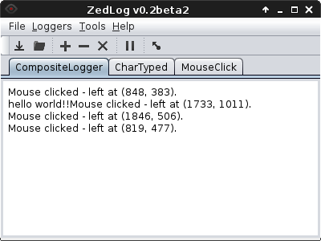

When you first start ZedLog you will be presented with the following screen. This is the main screen from which all functions are available, such as adding/removing loggers.

To add a logger click the [Add] button on the screen
(or the Loggers > Add Logger menu) which will bring up
the following dialog;

Select the logger type from the drop down list and press [Okay]
to add it to ZedLog. Once you have added the logger it will automatically
start logging, like so:

Multiple loggers can be added in this way to produce a customised 'composite' logger, which compiles all log data together.
The logged data can be viewed on the main window. The default logger is the previously mentioned 'composite' logger, which displays all logged data. Such as below:
Each logger also has its own tab in the main window which will display the data from that logger only. Such as the following;


The logged data can be saved to a file in two ways. Firstly the
currently logged data can be saved by selecting File > Save
in the menu and choosing the file. Like so;

The second way is to set a log file, which automatically saves the
log data. This allows for the log to be saved without explicitly
saving the file. The log file is set by selecting File > Set Log File
in the menu, like so;

An unwanted log file can be removed simply by selecting the loggers
tab and pressing the remove button (or the Loggers > Remove Logger
in the menu).

ZedLog has a handy feature which allows you to 'hide' it while still
logging. This can be done by pressing the [Hide] button
main window.
To bring the ZedLog window back you have to middle click (that is the mouse wheel) in the far upper left corner of the screen. This trick can also be used to quickly hide ZedLog aswell.
| Function | Shortcut |
|---|---|
| Show Help |
F1
|
| Add Logger |
Ctrl + Plus
|
| Remove Logger |
Ctrl + Minus
|
| Save Log |
Ctrl + S
|
| Set Log File |
Ctrl + Shift + S
|
| Show/Hide ZedLog | Middle click (mouse) in top left corner of screen. |
| Quit |
Ctrl + Q
|
Copyright © 2013, Zachary Scott <zscott.dev@gmail.com>